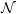
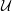
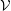
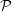
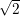
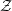

| Up | Next | Prev | PrevTail | Tail |
This package contains routines for computing the following normal forms of matrices:
When are two given matrices similar? Similar matrices have the same trace, determinant, characteristic polynomial, and eigenvalues, but the matrices
are the same in all four of the above but are not similar. Otherwise there could exist a nonsingular ∈M2 (the set of all 2 × 2 matrices) such that  = -1 = 0-1 = 0 , which is a contradiction since ≠0 .
Two matrices can look very different but still be similar. One approach to determining whether two given matrices are similar is to compute the normal form of them. If both matrices reduce to the same normal form they must be similar.
NORMFORM is a package for computing the following normal forms of matrices:
The package is loaded by load_package normform;
By default all calculations are carried out in Q (the rational numbers). For smithex, frobenius, ratjordan, jordansymbolic, and jordan, this field can be extended. Details are given in the respective sections.
The frobenius, ratjordan, and jordansymbolic normal forms can also be computed in a modular base. Again, details are given in the respective sections.
The algorithms for each routine are contained in the source code.
NORMFORM has been converted from the normform and Normform packages written by T.M.L. Mulders and A.H.M. Levelt. These have been implemented in Maple [4].
It returns {,,-1} where ,, and -1 are such that -1 = .
is a rectangular matrix of univariate polynomials in x.
x is the variable name.
Hence, if we have the case that n = m, as well as rank() = n, then
It returns {,,-1} where , , and -1 are such that -1 = .
Hence, if we have the case that n = m, as well as rank() = n, then
It returns {,,-1} where , , and -1 are such that -1 = .
is a square matrix.
where the  (pi)’s are companion matrices associated with polynomials
p1,p2,…,pk, with the property that pi divides pi+1 for i = 1…k - 1. All
unmarked entries are zero.
(pi)’s are companion matrices associated with polynomials
p1,p2,…,pk, with the property that pi divides pi+1 for i = 1…k - 1. All
unmarked entries are zero.
It returns {,,-1} where , , and -1 are such that -1 = .
is a square matrix.
The rij’s have the following shape:
where there are eij times (p) blocks along the diagonal and (p) is the
companion matrix associated with the irreducible polynomial p. All
unmarked entries are zero.
It returns {, ,,-1}, where , , and -1 are such that -1 =
. = {ll,ξ}, where ξ is a name and ll is a list of irreducible factors of
p(ξ).
,,-1}, where , , and -1 are such that -1 =
. = {ll,ξ}, where ξ is a name and ll is a list of irreducible factors of
p(ξ).
is a square matrix.
There are k - 1 terms “+1” in the superdiagonal; the scalar λ appears k times on the main diagonal. All other matrix entries are zero, and ȷ1(λ) = (λ).
in which the orders ni may not be distinct and the values λi need not be distinct.
,,-1}. is the Jordan normal form of (using symbolic names if
necessary). = {ll,ξ}, where ξ is a name and ll is a list of irreducible
factors of p(ξ). If symbolic names are used then ξij is a zero of lli. and
-1 are as above.
It returns {,,-1}, where , , and -1 are such that -1 = .
is a square matrix.
There are k - 1 terms “+1” in the superdiagonal; the scalar λ appears k times on the main diagonal. All other matrix entries are zero, and ȷ1(λ) = (λ).

in which the orders ni may not be distinct and the values λi need not be distinct.

The package is loaded by the command load_package arnum;. The algebraic field
Q can now be extended. For example, defpoly sqrt2**2-2; will extend it to
include  (defined here by sqrt2). The ARNUM package was written by Eberhard
Schrüfer and is described in section 16.3.
(defined here by sqrt2). The ARNUM package was written by Eberhard
Schrüfer and is described in section 16.3.
load_package normform;
load_package arnum;
defpoly sqrt2**2-2;
(sqrt2 now changed to  for looks!)

Calculations can be performed in a modular base by setting the switch modular to on. The base can then be set by setmod p; (p a prime). The normal form will then have entries in ∕p.
By also switching on balanced_mod the output will be shown using a symmetric modular representation.
Information on this modular manipulation can be found in chapter 9.
load_package normform;
on modular;
setmod 23;

[1] T.M.L.Mulders and A.H.M. Levelt: The Maple normform and Normform packages. (1993)
[2] T.M.L.Mulders: Algoritmen in De Algebra, A Seminar on Algebraic Algorithms, Nigmegen. (1993)
[3] Roger A. Horn and Charles A. Johnson: Matrix Analysis. Cambridge University Press (1990)
[4] Bruce W. Chat…[et al.]: Maple (Computer Program). Springer-Verlag (1991)
| Up | Next | Prev | PrevTail | Front |